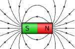

People were created by one Creator. As discussed in chapter one, He is the same Creator who created the universe and all beings. Some of His creatures are visible to us and some are not. Both the Bible and Quran confirm this fact.
"For by him were all things created, that are in heaven, and that are in earth, visible and invisible, whether they be thrones, or dominions, or principalities, or powers: all things were created by him, and for him." Colossians 1:16
And He creates that which you do not know.
Quran, 16:8
God created angels from light
Angels are invisible creatures or celestial beings that do God's will and carry out God's tasks such as managing certain functions in the universe.
Angels are God's soldiers. They worship Him and they are dedicated for Him (see Psalm 103:20, Matthew 26:53).
Angels are mentioned in the Bible from the Book of Genesis to the Book of Revelation.
Psalm 91:11, Matthew 18:10 and Acts 12:15 indicate humans have guardian angels. Matthew 13:49 indicates that angels will separate the wicked from the just on the Last Day.
In the Torah, the term "malak Elohim" refers to angels and supernatural messengers of God. It is interesting to know that the word "malak" in Arabic means "angel". The Archangel is called Gabriel or the Holy Spirit. He is in charge of conveying God's Message to His messengers. He also appeared to Mary for the Annunciation that she would be the Mother of Jesus.
Muslims believe that Archangel Gabriel revealed the final message of God (the Quran) to Muhammad over a period of 23 years. Gabriel appeared to him in his actual shape and in the shape of a man.
Other angels recognized in Islam are Azrael, the angel of death, Michael, the angel in charge of nature, and Israfel, the angel who will blow the trumpet to announce the Day of Resurrection.
God created genies from a smokeless flame of fire:
Genies or Jinns are mentioned in the Quran. They are
invisible creatures of God.
However, they can make themselves visible to human
beings. Unlike angels, they can be good or bad, believers
or unbelievers in God.
Those who are evil are called devils. Satan is from the jinns
and his followers and soldiers are devils.
N.B: If you do not believe in Angles and genies, see next
page for other invisible creatures of God.
Other invisible creatures of God:
Whether or not you believe in angels or genies, God created many things that we cannot see with our naked eyes. Human beings cannot see electromagnetic waves, wireless communication waves, radio waves, electric currents and many more things.
For example, the magnetic field lines that vary in magnitude and direction can be visible when iron filings are used around a magnet. 
Human eyes can only detect light at wavelengths in the visual spectrum. Other wavelengths, such as infrared and ultraviolet can only be visible when special tools are used.
God is the Creator of all beings. He is the Originator and the Fashioner of all creatures. He created the earth and all that is in it.
He gave metals and minerals their specific characteristics. He created plants and all species in countless types and numbers.
Zoologists have identified and recorded 31,153 species of fish, 8,734 species of reptiles, 9,990 species of birds, 6,515 species of amphibians, 5,487 species of mammals and about 900,000 species of insects.
However, scientists estimate that there could be hundreds of thousands of species waiting to be discovered. (Numbers quoted according to 2009 report)
The interdependence of creatures
God created nature in perfect equilibrium; however, man is hurting nature and polluting the environment, causing the extinction of many species.
There is divine absolute wisdom behind the creation of every being. God created interdependence among His creatures.
Scientists define ecology as the branch of biology concerned with the relations between organisms and their environment.
An ecosystem is a group of interconnected elements, formed by the interaction of a community of organisms with their environment.
Species in an ecosystem each have a role in keeping the ecosystem running in a smooth balance.
For example, predators keep the population of mice under control, insects pollinate flowers, and worms decompose leaf litter.
All species are important and help keep the ecosystem balanced. Ecological balance describes how ecosystems are organized in a state of stability where species coexist with other species and their environment.
Bombardier Beetle
This insect is one of the strangest insects in the world. When threatened, it shoots boiling hot chemicals from its belly up to 70 times in less than a fraction of a second.
The liquid is a combination of hydrogen peroxide and hydroquinone, which join together to cause a chemical reaction that generates a loud popping sound with a continuous shooting of the chemicals.
In Judaism, the name of God is a word of four letters, Hydroquinone, is a derivative of benzene, chemical formula C₆H₄(OH)₂
The liquid can be fatal to small insects or creatures and very painful to humans. You can watch this incredible insect on the following link.
Evolution theories cannot explain the extraordinary structure of this insect. The bombardier beetle needs all of its parts at once; it is created fully formed as it is.
Praying Mantis
It is named praying mantis for its prominent front legs, which are bent and held together at an angle that suggests the position of prayer. By any name, these fascinating insects are formidable predators.
They have triangular heads poised on a long "neck," or elongated thorax.
They can turn their heads 180 degrees to scan their surroundings with two large compound eyes and three other simple eyes located between them. But strangely, the praying mantis has just a single ear, located on the underside of its belly.
The mantises or Mantodea are an order of insects that contains over 2,400 species and about 430 genera in 15 families.
Mantis Shrimp
The mantis shrimp (which is neither a mantis nor a shrimp, but a crustacean that resembles both) has arguably the most complicated visual system of any animal on the Earth.
Its compound eyes sit on independently moving stalks and can see colors ranging from ultraviolet to infrared.
Each eye is divided into three regions for tracking motion, forms, depth and color.
Their eyes are compound, like those of the dragonfly, although they have a far smaller number of ommatidia (about 10,000 lenses per eye); however, in the mantis shrimp each ommatidia row has a particular function. For example, some of them are used to detect light, others to detect color, etc.
Mantis shrimp have much better color vision than humans (their eyes have 12 types of color receptors, where human beings have only three).
In addition to their ability to see ultraviolet and infrared colors, they have polarized light vision.
Common light sources, like the sun or a candle flame, do not emit polarized light, but when light from these sources shines on a polarizing filter, the transmitted light is polarized.
For example, sunlight shining on a filter, such as that used in Polaroid sunglasses, becomes polarized light when transmitted. When unpolarized light is transmitted through a Polaroid filter, it emerges with one-half the intensity and with vibrations in a single plane; it emerges as polarized light. A Polaroid filter is able to polarize light because of the chemical composition of the filter material.
Not all insects are described and identified but the following have been defined and described in the US.
19,600 types of flies,
23,700 types of beetles,
17,500 types of ants, bees and wasps,
11,500 types of moths and butterflies
It is estimated there are 30,000 species of fly in Australia, of which only 7000 have been described.
The Housefly
Out of the 900,000 types of insects, there are more than 120,000 species of flies worldwide. You could spend your whole life looking at different kinds of insects and never see them all.
Let us look at the housefly anatomy. The body of a fly (like other insects) has three parts: thorax, abdomen and head. It has a hard exoskeleton that protects it from moisture loss.
The fly's thorax features all of its limbs used for movement. It has three pairs of legs and one pair of wings. Scientifically, flies are of the dipteral group, i.e. insects with one pair of main wings.
However, houseflies have tiny, secondary wings, called halters, located below the main pair of wings.
The halters are mainly used to achieve balance. They can fly up and down, side to side and even backwards.
The common housefly can travel with a flying speed of 7.2 kilometers per hour. Its wings beat 20 thousand times per minute.
Can you imagine the complexity of the flying and movement mechanism of a fly?
The fly has six legs. Each leg is made of five segments, which include hairy, sticky feet that can stick to almost any surface. They can even walk across ceilings. Also, the fly uses the hairs on its legs and body to taste and smell.
For tasting and consuming meals, the insect uses its proboscis, a plunger-like appendage that extends from the bottom of the head. Two small, antenna-like feelers called maxillary palps allow the fly to taste its food.
The adult fly lives for an average
of three weeks. The female fly
may lay as many as 21 batches of
offspring, each containing up to
130 eggs.
House flies defecate every couple of
minutes. House flies are active during the
day and rest during the night.
The common fly has no mouth, but instead an eating tube. It vomits a drop of fluid from its stomach and deposits it on part of its meal to liquefy it .
This fluid is then sucked up along with the nutrients it has dissolved, leaving behind untold numbers of germs.
The fly has two compound eyes, which are the most complex in the insect world, allowing them to see a significant radius around their body.
Each eye has 4,000 separate lenses, which provide wide angle vision that is in fact omni-directional. This makes flies difficult to surprise or swat.
The latest state-of-the-art technology cannot create a robotfly weighing one gram. It cannot create a robot that can reproduce or spawn similar robots without raw material.
Also, it is impossible to copy the flying mechanism in such a small size. It would require a power supply and wings with many hinges and small bolts.
The creation of the fly is really miraculous and inspires us to reflect on the power of the Creator who made it!
How difficult is to make a robot similar to a fly?
An example is presented to you, so listen (carefully) to it.
Indeed, those you appeal to besides God will never create [as much as] a fly,
even if they gathered together for that purpose. And if the fly should snatch away from them a [tiny] thing, they would not be able to recover it from it.
Weak are the pursuer and pursued.
Quran, 22:73
The human hearing range describes the range of frequencies that can be heard by humans, which is commonly given as 20 to 20,000 Hz. Several animal species are able to hear frequencies well beyond the human hearing range. Some dolphins and bats, for example, can hear frequencies up to 100 kHz. Elephants can hear sounds at 14- 16 Hz, while some whales can hear subsonic sounds as low as 7 Hz (in water).
Salmon sense the Earth’s magnetic field to guide them home
Bees can sense the electric field of a flower and use it to find pollen.
Mantis shrimp swing their arm out at 80 kph when they punch, wich is about the same acceleration as a .22 caliber bullet
Elephants can lift almost 300 kilograms with their trunk.
Dung beetles can pull over 1,000 times their body weight. This is similar to an 80 kg man pulling 80,000 kg.
Dragon millipedes can shoot cyanide at their predators
Geckos and lizards can re-grow lost tails. Geckos can walk up walls and windows due to electrostatic forces between thousands of tiny hairs on their feet and the surface.
Swifts (family of highly aerial birds) have been known to fly nonstop for nearly 200 days.
Electric eels can generate electric shocks up to 600 volts.
The horned lizard can shoot blood from its eye
Some insects, such as gerridae (water striders), are able to walk on the surface of water.
Butterflies taste food by standing on top of it! Their taste receptors are in their feet.
There are more than 3,000 species of mosquitoes. It is interesting to know that only female mosquitoes bite. Male mosquitoes have shorter lives and less complicated mouth parts than females. They both feed mainly on fruit and plant nectar. However, female mosquitoes need the protein in blood to help their eggs develop. A mosquito can suck blood three times its weight and can lay up to 200 eggs.
Mosquitoes have antennae that detect the carbon dioxide released when people or animals exhale. They also use heat sensors to detect the warmth of the body. Mosquitoes prefer O-type blood and victims with high body heat.
The female mosquito has six mouthparts besides the labium, which is like the lower lip. Four mouth parts are used for piercing the skin and locating the blood capillary underneath: the mandibles that have pin ends, and the maxillae that are toothed blades used to cut the skin.
The other two mouth parts are tubes, one is used to pump saliva with anticoagulant to prevent blood clotting and the other one (called the labrum) is used to suck the blood. This amazing mechanism is available in an insect that weighs less than 2.5 milligrams.
Mosquitoes cause more deaths than any other animal in the world. They are carriers of diseases, including malaria, dengue fever and yellow fever, which can be transmitted to humans and animals when the mosquito feeds on blood.
The following verse in the Quran invites you to reflect on the miraculous creation of this tiny insect.
God does not disdain [or not ashamed] to coin
the similitude even of a mosquito or anything
that should surpass it in smallness or greatness.
Those who believed know that it is the truth from
their Lord; but those who disbelieved say: What
does God intend by giving such an example? He
misleads many by it, and He guides many by it;
but He does not mislead by it except the defiantly
disobedient.
Quran, 2:26
My similitude in comparison with the other
prophets before me, is that of a man who has built
and completed a house except for a place of one
missing brick. When people see the house, they
admire its beauty and say: how splendid the house
will be if the missing brick is put in its place. So
I am that brick, and I am the last of the Prophets.
(Narrated by Bukhari 4.734, 4.735)